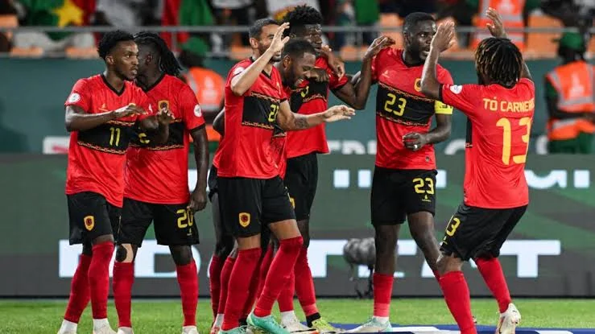
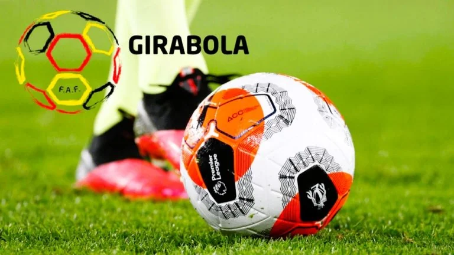

Futebol
Seleção Nacional em fase de preparação

A equipe nacional de futebol iniciou uma nova fase de preparação com foco nos próximos desafios. Os jogadores trabalham aspectos técnicos e táticos para elevar o nível da equipa.
Futebol nacional ganha novos talentos
o campeonato continua a revelar jovens jogadores com potencial. Clubes nacionais apostam cada vez mais na formação para descobrir novos talentos.
Clássico gera expectativa
Um dos jogos mais aguardados do Girabola, entre o 1º d´Agosto e Petro de Luanda, acabou por não acontecer como previsto. A situação gerou expectativa entre os adeptos, que aguardam uma nova data para o confronto.
// 21 de Março de 2026.
Petro de Luanda conquista mais uum título do Girabola
O Petro de Luanda voltou a mostrar a sua força no futebol ao conquistar mais um título do Girabola. A equipa garantiu a vitória após um jogo convincente frente ao Desportivo da Lunda Sul, confirmado a sua superioridade ao longo da temporada.
// 07 de Maio de 2026.
1º D´Agosto tropeça e complica luta pela classificção
O 1º D´Agosto perdeu uma boa oportunidade de melhorar a sua posição na tabela ao empatar num jogo importante. Enquanto isso, o Petro de Luanda continua firme na liderança,aumentando a diferença para os seus concorrentes direitos.
// 9 de Maio de 2026.
Girabola mantém disputas equilibrada entre clubes

A principal competição de futebol em Angola continua marcada pelo equilibrio entre as equipas, com jogos competitivos e grande apoio dos adptos.
Associação Nacional de clubes Angolanas de futebol ANCAF
,organizadora do campeonato nacional definiu para o dia 15 de Agosto o ínicio da temporada com a disputa da supertaça entre o campeão Petro de Luanda e o Wiliete de Benguela, vencedora da Taça de Angola e o começo do campeonato nacional está previsto para o dia 22 de Agosto.